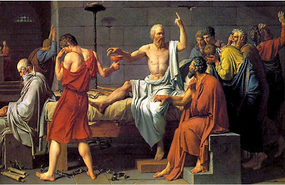

The Trial of SocratesFrom The Wretched Dog:
Mike,
Stumbled across this at Powerline. While the discussion is completely off-topic, the statement at the end caught my attention, as it resounds with the essential issue in crafting a tenable, lasting just constitutional system.
“I realized that the issue between Lincoln and Douglas was identical to the issue between Socrates and Thrasymachus in the first book of Plato's Republic. Not similar to it. Identical. It is a question of whether the people make the moral order or the moral order makes the people."
We need a universal (e.g. both Judeo-Christian and secular) moral system to undergird our future polity; one that can command the respect and adherence of a overwhelming majority of Americans.
The Founder’s fundamental mistake was the assumption that the Judeo-Christian ethos would, coupled with the forms of separated and shared (therefore competitive) power, along with Adam Smith’s enlightened self-interest, stand sufficient to guard against tyranny, would the people be even minimally alert.
History proves otherwise. For all their Calvinist pessimism regarding the human condition and appreciation of the tyrant’s ‘will to power’ throughout History, the founders failed to adequately craft an adequate political-economy.
I think the essential flaw in the Founder’s constitutional design was the failure to explicitly codify the nature and precepts of the moral order (mere referencing ‘Nature’s God” and ‘Natural Law’ is not adequate), tied explicitly to the mechanisms of governance at every level. What matter if the national government cannot take my property if the local commissars are not so bound?
Still working on outlining my thesis (not that it will ever matter to anyone but myself), but I found this statement – “Do the people make the moral order, or does the moral order make the people” – to be quite helpful.
Your thoughts?
twd
http://www.powerlineblog.com
33 comments:
IMO, The only failing of the founders (if any) was failing to forsee how lazy we as a populance would get with regard to preserving our liberty.
The true failing is on us and I personally believe that the core of the problem is parents ceding the education of their children to the state and state run (more or less) media.
How many generations now have been attending schools that don't teach the love of liberty over security (and the difference between the two)?
They are taught to love group identity over individual exceptionalism.
Freedom is redefined to being able to do whatever you want without consequnce. The nanny state will be there to catch you.
I get beat up for oversimplifying and picking on education but I believe that I have reached the core of the issue.
For your consideration.
We thought that the Constitution would stand the test of time because it was 'law' based upon words that had meaning as defined in sources like 'Black's Law Dictionary'. One would think that a blueprint based upon a known set of words with specific meanings would have been enough.
To your point regarding an undergirding morality or common shared moral code - Just as words that had and have specific meaning from a legal standpoint can be reinterpreted so can a common morality. I think we had a fairly common moral world view as a nation up to say 40 or 50 years ago.
What happened?
Marxism and collectivism happened for one thing and through the use of tax payer money stolen from us as well as previous generations we have had the full force of state propaganda used against us, which begins within the public education system (See Marx's 10 Plancs of the Manifesto). Outcome ~ a SCOTUS candidate like Sotomayor had to 'brush up' on her Constitutional knowledge - WTF!!!
Also our magic scroll of a Constitution was doomed from the get go in its ability to protect the average pol. This is because the very 3 branches of government that are responsible for 'protecting us' also decide on what the scope of said government's power will be. How's that workin' for ya?
Also an understanding of how our government came about and who benefits tells us a bit about it's origins. Was it really to benefit the people? A look at how the 'Rights of the Englishmen' came about might shed some light. We are told that it benefited the common man but it was established by the landed nobles who were the source of ARMED force that fought for the king. They threatened him into signing the document. (* Muy importante - they were armed to the teeth and hence had bargaining power - otherwise they would have been peasants)
Perhaps our form of government has always been about gaming the system by those that control most of the wealth. See 'Hamilton's Curse'.
Cory
Without a doubt, the People make the moral order and not the other way around. Any order in this world is crafted by individual human beings whether acting alone or in concert.
The problem in the United States today is that an increasing percentage of the population wants something for either nothing or virtually nothing and is willing to stand any amount of abuse from those who are supposed to serve them to get their payday. Many Americans growing up today legitimately cannot even distinguish between right and wrong the lines having been so severely blurred. We no longer have a common moral standard in this country just as we are losing our common language. Many Americans under the age of forty don't have a basic grasp either of national history or even their own family history.
For all of their wisdom the Founders could never have imagined the depravity which is now taken for granted; everything from rampant drug addiction and alcoholism to thirteen year olds committing mass murder, eight year olds raping four year olds and some communities suffering an illegitimacy rate of more than seventy percent. The worst atrocities witnessed by the Founders pale in comparison to what we see now on a daily basis.
Our twin enemies are ignorance and apathy. Armed with the knowledge of right and wrong as well as those who came before us coupled with the will to act, the American people could recreate this country for the better in less than a decade. Sadly, we seem to be getting further and further away from that goal rather than nearer to it.
An interesting question indeed. The role of religion. Does religion = moral code?
Communism has considered the Catholic Church its deadly enemy, and has made every effort to destroy it...and Christianity as well. By destroying the religious beliefs and practices of the nation, they have indeed done much to weaken the moral fiber of the nation, and thereby weakened the nation itself.
A society needs both religion and law. Religion establishes the ideals of behavior and thought, which are usually unattainable by most of mankind. The law establishes the minimum standards a society will tolerate. Most of society operates between the two extremes, and either one as the sole arbiter of societal behavior will result in societal disaster.
Make no mistake though...if the Marxism of this president is established as the underlying principle of the nation, it will merely substitute the State as God, the moral code will be one and the same as the laws that will uphold it, and whatever benefits the State will be the only measure of right and wrong.
I think we have here another instance of "ask the wrong question; get the wrong answer".
Why does it have to be either-or? Perhaps the moral order makes the people and the people [re]make the moral order, then the remade moral order remakes the people (repeat as necessary).
Was it not once perfectly reasonable to have slaves as farmhands?
I think the ideal situation is a moral order which encourages people to grow (and therefore change) morally.
Carried to its logical conclusion, I think we will wind up with The Golden Rule as Article 1-and-only of our revised Constitution ;-)
"“Do the people make the moral order, or does the moral order make the people?”"
Both. It's a synergistic relationship. Any group of people will develop, over time, their own moral code for inteactions between each other, and interactions between non-group members. Depending on what particular variant (and there's nothing new under the sun) of moral code they're using, the group may thrive and prosper...or decline....or be crushed from without, by other groups.
A moral code, having developed, adhering to it is then expected of new members of the group. Again, those new members may accept, decline (and be expelled) or even end up altering or destroying the code of the group.
The important thing with any moral code, though, is that for it to be effective for a group it's not that it be explicit or well written. It needs to be accepted and internalized by all the members of the group. To the extent that it ISN'T, and that there is no penalty to group members for failure to follow the code, the group is demonstrated to be in decline.
But that's just my thought.
"Do the people make the moral order, or does the moral order make the people?"
The answer is: Yes.
This question, as structured, is a variant of the same old Mind/Body Split that has come down to us over two millennia in Western philosophy. Anyone who wants to discuss this issue with real technical precision will come to understand that when human beings do not sink below their own nature (the only species that can actually do that) "people" and "moral order" are integrated and not at all mutually-exclusive.
The question itself is a fallacy.
Firstly, order is not to be admired, nor desired. Free humans are not orderly. They each possess different skills, different dreams, different goals, different viewpoints and different methods of realizing any or all of the above.
As for morality, it is entirely subjective. It relies only on what most people of any segment of any population agree it is. Therefore morality is an unknown quantity and quality in a universal sense. It is whatever the most people agree it is. Under this definition the tyrants of the world's history could possibly be declared moral in their times, because the most people under their rule either agreed with them, supported them or at the least, didn't oppose them. Thus was established the morality of that time and place.
We may look back upon former regimens and declare them immoral, but we do so from our perspective. A perspective that the majority of us have agreed is moral. And for our purposes we are right. Simply because morality is purely subjective to the population in question.
For there to be order requires the infliction of a population's morals upon others, through force if necessary. That application of force to attain order is an affront to liberty. But it is not immoral in the parlance of the population which enforces it.
Law and order, in whatever venue or regime, is claimed to be based on morality. Never is it legitimately claimed to be based on individual liberty. Individual liberty is anathema to order. Therefore it is usually declared immoral.
Those courageous enough to live free are considered enemies of the moral order. Yet, most such men due to their understanding of liberty do not impose conditions or restrictions on others. Except, of course when their persons or liberties are violated, then the imposition of restrictions can range from mild to lethal.
This risk of truncation of the assumed power of a society is seen as danger to that society and is therefore more hated than any other attribute of humankind.
Our founders understood this and did their level best to guarantee an environment conducive to disorder in the absence of harm to innocents. They were not advocates of law and order, in the main. In fact, they were advocates of law and disorder. The only laws they intellectually supported were laws that punished disorder of the harmful kind to other citizens.
That they were human is evidenced in how far short many of them fell from that ideal in their personal and business dealings. But intellectually they understood the danger of too much order and externally enforced morality. Morality being only the fad of the moment and place.
In conclusion, people make the moral order, however transient it may be. Else, we would not be at the moment engaged in the great moral (pun intended) battles we are currently fighting to establish which values shall prevail. If moral order make the people there would be no battle, a battle which we, just in this country, have fought since its inception. There would be no need for the battle if moral order made the people. It does not.
"We need a universal (e.g. both Judeo-Christian and secular) moral system to undergird our future polity; one that can command the respect and adherence of a overwhelming majority of Americans."
More wildly wishful thinking that peace and justice arises from majority rule Communism and might makes right...if only the formula was tuned a bit. I also hear that Socialism works too, if the right people are in charge. What the overwhelming majority of Americans really want is to think themselves relieved of the burden of making their own moral choices, while standing exposed and nearly powerless in front of all of creation. To fool themselves they concoct deities and governments, believe them imbued with great power and benevolence, and worship them as moral actors greater than themselves. It never works.
"The Founder's fundamental mistake was the assumption that the Judeo-Christian ethos would, coupled with the forms of separated and shared (therefore competitive) power, along with Adam Smith's enlightened self-interest, stand sufficient to guard against tyranny, would the people be even minimally alert."
The majority of the Founders made no fundamental mistakes; they wanted to be the aristocracy leeching off a new population containing little entrenched competition, and they achieved that. The first press release said 'a republic, if you can keep it', because they were quite sure it couldn't be kept, yet it made a great stalking horse for the Mercantilism they wanted to profit from. History records no great weeping and clothes-rending by George Washington before he put down the first tax rebellion.
Mike, I'll add to this a point a fellow commentor on another blog made to me.
When it comes to arguing with the statist we aren't asking them to change their mind. We're asking them to renounce their religion for the state is their god.
Human beings are not able to create morality. They can merely recognize the moral standard which applies to all human beings.
A "moral order" is what you have when the majority of individuals that comprise a society recognize the same moral principles (or fail to recognize the same moral principles.)
Some aspects of the moral law are obvious to all: it is not moral to steal, murder, rape, commit adultery, etc. The finer details of the moral law can be a bit more difficult to grasp, especially when you start getting into the principle of double effect.
I'd rather have one simple-hearted person saying, "That ain't right" than a million intelligentsia wheedling "Well, this action is considered evil by our culture, but in other cultures, they consider it morally permissible, or vice-versa."
Again, humans do not legislate morality. They recognize it to a greater or lesser extent. Morality is legislated by our human nature.
Even if suddenly, everyone in the world believed that rape or murder were moral, it would not be so. No more than if everyone were to decide that they were able to fly. Human beings are created to act in a certain way. Justly. Charitably. Generously. Not initiating aggression. Not defrauding others.
Everything in the moral law is, indeed, black and white. Our ability to perceive the precise distinction between the two is what lacks, not the existence of the objective moral standard itself.
Billy Beck beat me to criticizing the core of the question so I'll simply add:
An individuals choices are influenced by the social environment but those choices in turn affect environment. This continuous feedback lets the minds of ordinary mortals construct the values necessary to perceive good and evil. Add to that the proposition that free will is a function of the capacity to think rationally and a moral order emerges.
This discussion widens the time lens a bit.
Looking back at history, I have not been able to find a time when a society has progressed to a point where the people have a high degree of freedom, and they are able to maintain it. It always decays. Kind of depressing. Per history, next up is large-scale violence, followed by a long period of tyranny.
It looks like it's in our nature as a whole, to get lazy and let things go once life gets easy enough.
Sucks.
Time for a stout.
(I got prompted for 'word verification' again, hope it doesn't 2x post.
I think a major contributing factor to being able to establish temporary freedom in America, was the distance from existing tyrannies. It took at least a month to get here from europe. There are no places left on earth that it really takes a month to get to now.
Maybe the next free society will be on the moon, or maybe Mars, just like in the sci-fi books I used to read as a kid.
Maybe for my grandkids, or great-grandkids.
I'll make sure they have the idea planted.
"We need a universal (e.g. both Judeo-Christian and secular) moral system to undergird our future polity..."
What is the source of this universal law code? Is a secular solution even remotely possible?
Consider how improbable this would be.
Premise: man cannot be both the source and the object of law.
If man were the source of law, it would presuppose his inherent possession of a law nature. As such, man is law-abiding by nature and his pure will coupled to his upright conduct presents a harmonious unity.
But if man is naturally predisposed to lawful behavior, what necessity is there for the external restrain of legislative sanction?
The anarchist would answer, "There is none. Man is a law unto himself."
But suppose we answer that man is inherently lawless and needs a system of sanctions that would give check to his cupidity. Who then gives the law--the lawless?
This brings us back to the cynical argument of Thrasymachos: Law is the imposition of the strong against the weak.
The Greeks found no successful counter to this amoral argument, which Nietzsche fully realized. There is only the will to power, he concluded.
Plato's failure (and Aristotle's, too) is that he viewed the apprehension of universals as man's proper epistemological goal.
Alas for the Greeks (and Romans and every other devotee of conceptual realism), our capacity is only for knowledge of the concrete and particular. Yes, Randroids--we are indeed concrete bound.
There is but one answer to this problem. God, who alone comprehends universals, is the only proper source of Law and Man is its object.
We already have a moral system to undergird our future polity--the Ten Commandments. We dismiss them at our peril.
MALTHUS
A point of epistemology: "...our capacity is only for knowledge of the concrete and particular."
That is obvious nonsense. The concept of interstellar distances, for one instance, makes clear our capacity for abstraction as apprehension of reality.
That is obvious nonsense. The concept of interstellar distances, for one instance, makes clear our capacity for abstraction as apprehension of reality.--Billy Beck
Abstraction is not reality--it is a shorthand means for making sense of particulars.
Moreover, there is rarely agreement among scientists as to which theoretical model is best suited to this task.
Do we interpret this reality through the lens of electro-magnetics, optics, or chemical analysis?
Wait--I know your answer: "Yes."
But surely this misses the point. There is no way to move from the existential to the universal without a "leap of faith." There is no way to get "there" from "here". This is not to say that some theories are not better than others; merely that no one theory holds universal validity. If history teaches us anything, it is that unilinear, monocausal theories are invariably false.
Please abandon the pretense that man can generate his own universals. You will become an intellectual schizophrenic--particulars and universals alternately vying for supremacy in your mind.
MALTHUS
We have common rights and individual responsibilities. Not the other way around.
Ayn Rand's Objectivism is good but it offends the religious persons. Many concepts for moral order without religious dogmas getting in the way of reason.
Keep your faith but think.
A few years ago, 15 maybe, the Texas Commission on Law Enforcement Officer Standards and Education [TCLEOSE] decided that ethics and morals should be made a part of the course curriculum. So the commission wrote up some learning objectives and stitched them together with something from an ill remembered Sunday school. This conglomeration was then dropped upon instructors who were assured that ethics could actually be taught to and accepted by adults. TCLEOSE was confident that those people who may have either never heard of ethics and who had already arrived at as to how they intended to relate to their fellow man would accept the State’s version of the golden rule and change a lifetime of learned morals and ethics, or lack thereof, to fit that mold. Of course; the public schools, parents who were too busy making ends meet, and, to a great extent, the churches had gotten out of the ethics and morals business back during the 60’s.
Since rookie jailors have been receiving the benefit of all this ethical training I have not noticed that any fewer correctional officers are being fired and jailed for having sex with prisoners, stealing, gun running, spousal abuse, homicides, or … you name it.
It is fairly obvious that the State is in no position to teach ethics. The State is not in the morals business, rather the intimidation business. The State has no ethics. The State teaches by example that force and the threat of force is the only morality. State employees, especially in the law enforcement and corrections communities, are reminded of ethical conduct only when someone higher up the pecking order wishes to impose his authority and needs a section of some rule, regulation, or ethical code to cite in order to mete out punishment. Otherwise, anything an underling may be able to get away with while imposing his “authority” onto the public is acceptable. Unless the underling gets videotaped while doing so or otherwise becomes an embarrassment and liability to his superiors.
Administrators and supervisory personnel profess to encourage ethical behavior in the ranks but in actual practice do not want to be bothered with ethics. The morally ethical employee is an impediment to daily practice.
The street officer who believes and practices the concept that he is to “serve and protect” his fellow citizens will not see advancement, will be badgered constantly about his traffic citation and arrest statistics, and will not be popular with supervisors.
The jailor who stands by the idea of being there to insure a “safe and secure environment for prisoners to live and for fellow officers to work” rather than the concept that he is there to constantly exert authority over the prisoners will not be appreciated by his supervisors. The jailor who is determined to respect the fact that inmates are human, that an inmate and his property have the same protections under the Constitution and laws as the case would be if the inmate weren’t imprisoned, the jailor who points out breaches in physical security, breaches in security practices, and who points out deficiencies in practice and procedures that are in conflict with his state’s minimum jail standards will not be appreciated by his administrative staff and may be shunned by his fellow employees.
The idea is to do anything that is expedient. Ethics and morals are never considered until one is caught with one’s hand in the cookie jar. That is the morality of the folks at the head of the pecking order and, similar to Reagan economics, morality also experiences a “trickle down” effect. Corruption at the bottom, like cancer, may usually be excised before it affects the rest of the body. Corruption at the top generally affects the entire system.
Mr Vanderboegh, I concur with several of my fellow commentors. I believe the answer to your question is “Yes” …… and “No”.
I think a lot of folks answering this are not understanding the question.
"The Constitution" is not the same thing as "the moral order."
I would say, no, people do not make the "moral order." The "moral order giver" makes the "moral order," typically called God.
The moral order does not make people.
People will continually fail at living up to "the moral order," which is why Jesus was needed.
I would say the simple version of the answer would have to be "no" on both counts.
Of course, for the Darwinian evolutionists out there, the only answer they could give is "what's moral order?"
You don't get "moral order" from a random, unguided, purely naturalistic set of random events over time.
Sans Authoritas, you are speaking of right and wrong in absolutes. I actually agree with you, that they are black and white and our faulty ability to perceive where the line between is causes a great deal of injustice.
However, in speaking of the morality of a culture, it is what tne people in that culture invent. Right, wrong, or indifferent. Moral order has held sway many times throughout history though the morality of the day be wrong and unjust, or right and just.
For those of us who believe in a deity, we pretend to a morality we deem as required of us by that deity. Yet, we subvert it, we misinterpret it, we torque it to our own ends and establish what we call morality. Societal mores are nothing more than what people agree they are in the majority.
Religious or human transcendant morality is an entirely horse of another color.
I'd go even farther than Billy - our capacity to engage reality, the concrete and particular as humans is only due to our ability of abstraction.
"Please abandon the pretense that man can generate his own universals. "
Please close your insipid yap before I start insulting you.
"People will continually fail at living up to "the moral order," which is why Jesus was needed."
And that, obviously, brings the question: Why was Jesus not needed in China...?
It's high time we started over with Zero Aggression Principle being the Moral Order. This Moral Order would also apply to ALL groups or collections of people, INCLUDING those who call themselves "government."
"Carried to its logical conclusion, I think we will wind up with The Golden Rule as Article 1-and-only of our revised Constitution"
I believe the golden rule works better as a moral principle than a law. Article 1-and-only of our revised Constitution should be "Politics is banned". Coercing the peaceful is always wrong. Since there is no implication that everyone in a geographic area has consented to this statement, it will be a foreign policy by those who have accepted it, not a constitution.
"This brings us back to the cynical argument of Thrasymachos: Law is the imposition of the strong against the weak."
Right, sadly. Ultimately there is only instinctual programming, and the arms race. However, there is an asymmetry that favors the outcome we (ought to) want: defense is cheaper than offense. The more tools in private hands that favor defense, including video recorders and communication gadgets as well as guns, the harder it will be to make crime pay. We can strengthen the weak.
"You don't get "moral order" from a random, unguided, purely naturalistic set of random events over time."
You're right. However, I still have historically informed opinions about what laws I want to live under. I do not claim these laws to be universal or transcendent. I do claim they are not repeating past mistakes, it is possible for everyone to follow them without contradiction, it leads to the best individual outcomes for everyone except sociopaths, and to justify them requires neither Communism nor might makes right.
Nope. It was nothing at all like this. The Constitution was written by the winners of the American Revolution. These were all CONSERVATIVES. Those 30% of the colonial population that supported the King's government and its policies were the 18th century government power sycophants; the very models of our current statist, collectivist liberals.
They lost and were either hanged, burned out or fled to Canada (You can tell how much good the addition of their numbers did the Kanukistans). None were present during the Constitutional Convention because all of them had lost political influence during a very bitter 7 years of civil warefare. So, the document was written to protect ordinary people from the power of government; to protect the people from what amounts to today's liberals: the eternal threat to every man's individual freedom.
Now you understand why today's liberals hate and undermine the Constitution. The only flaw in this is the fact that liberals have bred back up to nearly 30% of the population again.
Please close your insipid yap before I start insulting you.--Billy Beck
Now I can see why Kim du Toit kicked you off his site. There is no way to have a civil discussion with you.
Listen to my argument: How can the lawless bring forth law?
Laws are not produced by man. They preexist him and govern all his conduct. Man may discover and make use of them, but he does not make them.
The rules of morality are not the conclusion of our reason.--David Hume
You will note that I make free use of the universal "all" in stating that laws govern man's conduct. Doesn't this contradict my point?
I offer another example. "All have sinned and fall short of the glory of God."
It is evident that I cannot know all men. Therefore I cannot abstract and formulate this proposition. (You can't get "there" from "here" without a "leap of faith".) Yet I may know and embrace it as being universally true because it is a product of God's specific, concrete revelation.
There are only two paths available to us. One leads to Athens, the other to Jerusalem. I suggest the Ten Commandments as being a much better offer than Plato's republic.
MALTHUS
A note from the site boss:
"Please close your insipid yap before I start insulting you.--Billy Beck"
MBV: Now, Billy, a little more decorum, please.
"Now I can see why Kim du Toit kicked you off his site. There is no way to have a civil discussion with you. -- Malthus"
MBV: Citing Kim du Toit on this blog is is like quoting Field Marshal Petain to a jury of French Resistants -- not likely to achieve the result you seek. Billy can behave badly, it is true, but all the more reason to ignore the invitation to a urination contest and deal with the substance of his arguments.
And Billy, be as polite as you can, please.
[O]ur capacity to engage reality, the concrete and particular as humans is only due to our ability of abstraction.--Johnny
Is the concrete and particular what we experience as reality or is it abstraction? To my eyes, abstract models seem one step removed from reality.
I submit that particulars are the cathedral but abstractions are only the scaffolding, making construction easier but being nothing in themselves. Conceptualists have the tail wagging the dog.
We are not fully human because we can abstract from experience. Otherwise, those with poor conceptual skills would be less human or less-than-human.
We are fully human because we are made in God's image.
MALTHUS
"There is no way to have a civil discussion with you."
Sez you. I have about twenty years of online record that any reasonable person would say is manifest refutation of your little moan. This much is true: I hold no patience for the disqualified, and that's you, so far.
"Listen to my argument:"
I have. It's why I said what I said. And...
"How can the lawless bring forth law?"
...your premise is bullshit right from the beginning. That's why there is nothing to discuss with you.
MBV: "Now, Billy, a little more decorum, please."
That's all there is, Mike. I edited that remark before I sent it up, and I'm being nice. And I will not peaceably indulge anyone's warmed-over Plato. It's idiotic, and worth nothing but contempt.
"MALTHUS" - it's a done deal, the experimental results are in: our perception is not a mirror of reality, it is an abstraction, a model - the shadows on the wall in Plato's cave. But, even more than that, the ability of humans for the generation and understanding of symbols takes our thinking to a level that animals can't match (and early in childhood development).
This is a matter of actual experimental science. Faith is not required - but our capacity for abstraction is!
"The Constitution was written by the winners of the American Revolution. These were all CONSERVATIVES."
Yes, I agree. Conservatives in the modern meaning: National Review W.F. Buckley neocons who believe in rule by experts (themselves), lest horrible things happen to the unwashed populace, who they are both protecting and keeping ignorant. Nothing like the libertarian types who were also thick on the ground, but seem to have lost the war.
The Articles of Confederation was a reasonable approach if all you wanted to do was coordinate a unified response to an army attack by foreign powers. But they discarded it for a 'government of more energy' that could tax:
http://www.lewrockwell.com/dilorenzo/dilorenzo151.html
I do not think Hamilton was so uniquely talented or twisted that if he was removed the unfolding would have been substantially different, but he was at the head of the pack at that time.
"So, the document was written to protect ordinary people from the power of government; to protect the people from what amounts to today's liberals: the eternal threat to every man's individual freedom."
Can we weigh the evidence for and against that claim? The Constitution was sold as an increase in government power, as if this was a good thing. Very early on, it crushed a tax resistance with a big army (Whiskey Rebellion), banned accurate political free speech (Alien and Sedition Acts), made a huge colonial claim on somebody else's territory (Louisiana Purchase) and systematically killed the inhabitants as they invaded it (Manifest Destiny). I think the Constitution walked and quacked like Mercantilism from day one.
Post a Comment